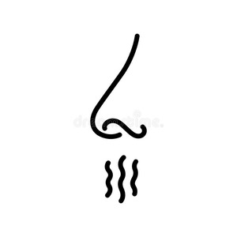

ϧⲁⲓ nn m, breath of nose (so Ar): TRit 522 = BM 846 125 of corpse ⲁϥϩⲉⲣⲓ ⲛϫⲉ ⲡⲓϧ. ⲁϥⲕⲱⲣϥ ⲛϫⲉ ⲡⲓⲗⲁⲥ = نفس الانف, but K. al-Tagnîz (1905) 166 ⲛⲓϥⲓ ⲙⲡⲓϣⲁⲓ, so prob l ϣⲁⲓ.

ϧⲁⲓ nn m, breath of nose (so Ar): TRit 522 = BM 846 125 of corpse ⲁϥϩⲉⲣⲓ ⲛϫⲉ ⲡⲓϧ. ⲁϥⲕⲱⲣϥ ⲛϫⲉ ⲡⲓⲗⲁⲥ = نفس الانف, but K. al-Tagnîz (1905) 166 ⲛⲓϥⲓ ⲙⲡⲓϣⲁⲓ, so prob l ϣⲁⲓ.
| view | ⲛⲓϥⲉ SAL ⲛⲓⲃⲉ S ⲛⲓϥⲓ BF ⲛⲓⲃⲓ F ⲛⲁϥⲧ⸗ S ⲛⲉϥⲧ⸗ SA ⲛⲓϥⲧ⸗ S | (verb) intr: blow, breathe of wind, breath [πνειν]
tr: blow315 |
| view | ϣⲁ S ϣⲉ SAF ϣⲁⲛⲧϥ S ϣⲁⲓ B ϣⲉⲉ AF ϣⲁⲛⲧ⸗ SB ϣⲁⲁⲛⲧ⸗, ϣⲁ(ⲁ)ⲧ⸗, ϣⲁⲧⲧ⸗, ϣⲛⲧ⸗ S ϣⲉⲛⲧ⸗ SAF ϣⲉⲉⲛⲧ⸗ AF | (noun masculine) nose [μυκτηρ, οσφρησις]1844 |
| view | ϧⲁ {or ϧⲁⲓ} B | (noun masculine) heel, mark of heel (?)2074 |
| view | ϧⲁⲓ B | (noun) nitre2075 |
| view | ϧⲁⲓ B | (noun masculine) ship's pole, boat-hook2077 |
| view | ϩⲁ, ϩⲟ S ⳉⲁ A ϧⲁⲓ B ϩⲉⲉⲓ F | (noun masculine) winnowing fan [πτυον]2095 |